雖然Miyoo掌機小巧，不過缺乏一些比較有趣的輔助周邊，而司徒剛好想要在Miyoo掌機身上，回憶一些美好的PS1遊戲，於是激起司徒想要增加震動功能的想法，司徒便開始找尋可用的震動馬達，而心裡想起的，則是那個曾經帶給我們美好回憶的durex震動保險套，於是最終選擇這款保險套，希望可以再次體驗震動的快感，而由於是設計給保險套使用，因此司徒心想，功耗方面應該會有不錯的表現，最後司徒買了兩個durex震動保險套，在未使用的情況下先行改機，過程如下說明。
精簡的包裝
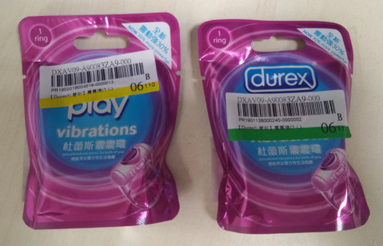
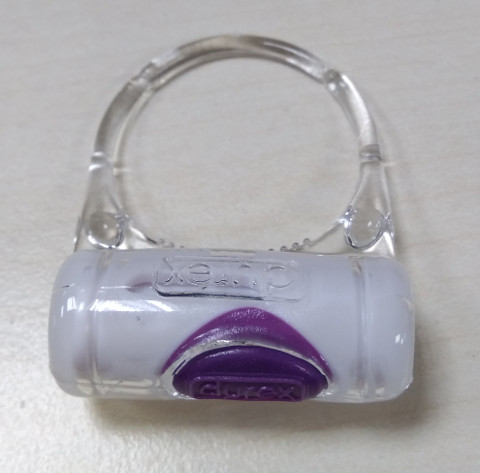
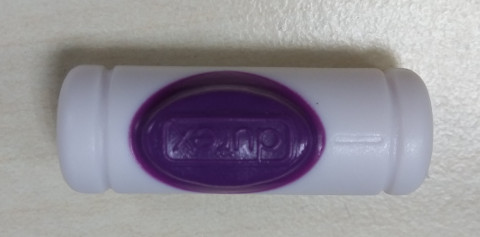
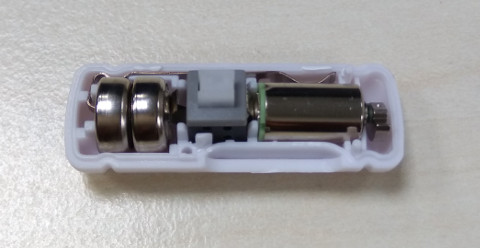
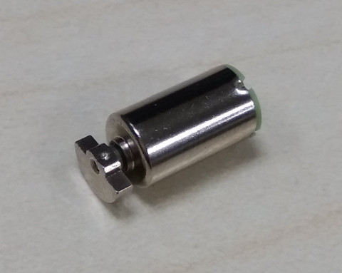
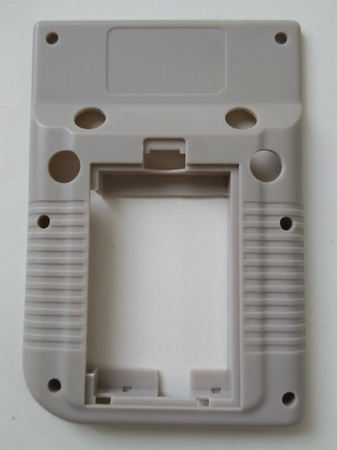
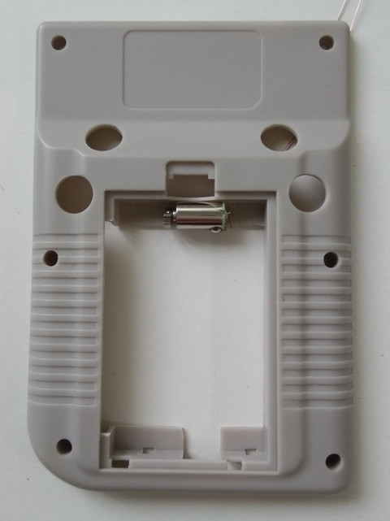
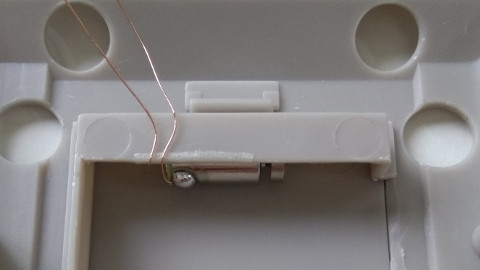
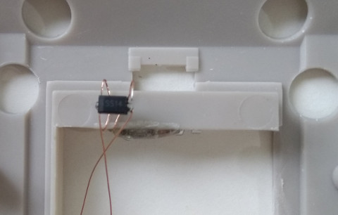
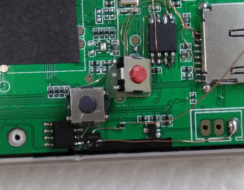
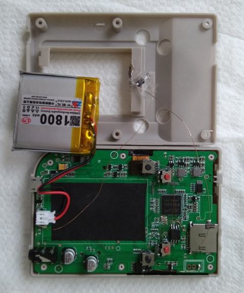
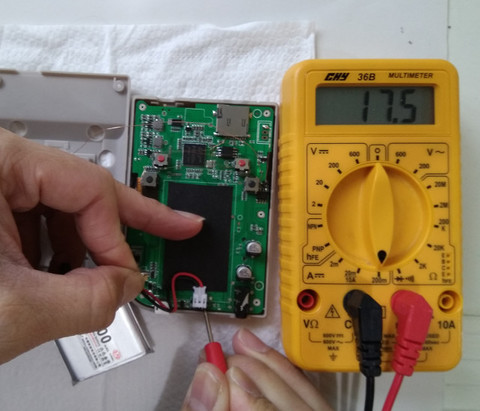
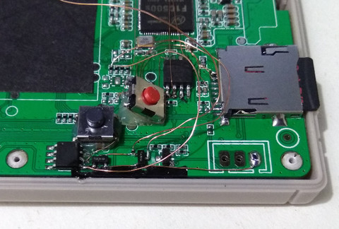
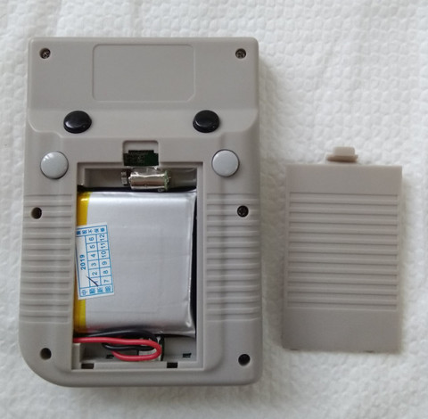
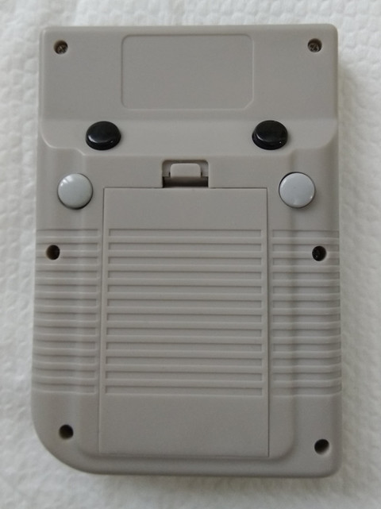
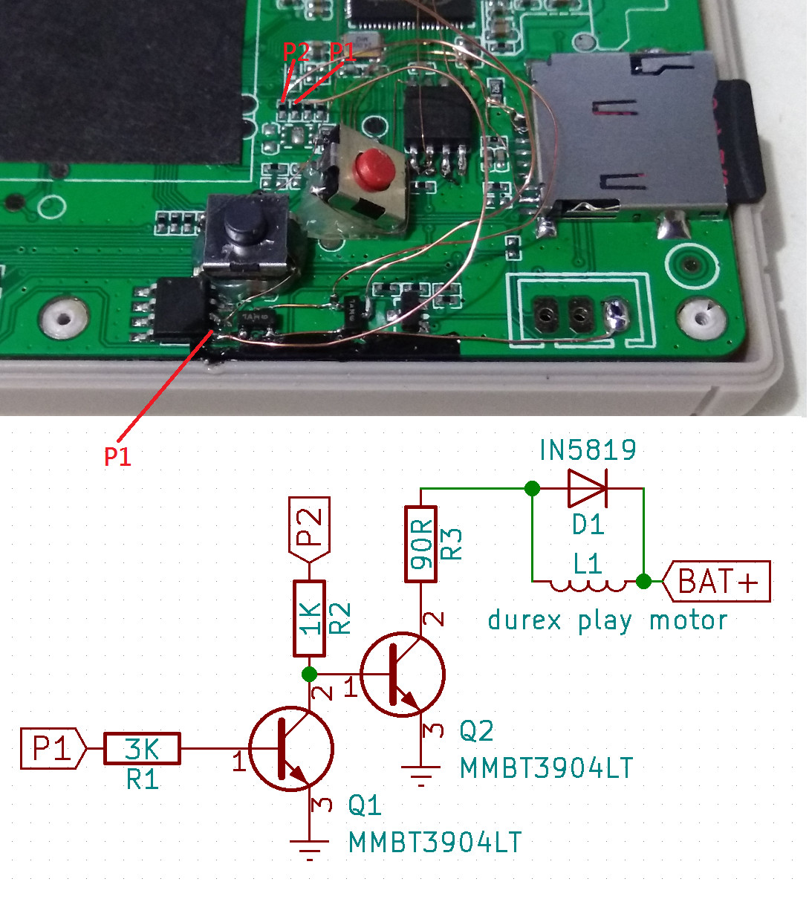